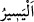

14. (Evlerinin) her yanından üzerlerine saldırılsaydı da, o zaman onlardan fitne
istenseydi, şüphesiz hemen onu yerine getirirler ve bu hususta pek az ancak
gecikirlerdi.
“(Evlerinin)” sadece bazı yanlarından değil “her yanından üzerlerine saldırılsaydı
da,” evlerine girilseydi, yâni evleri tamamen korunaksız olup fenalık ve fesad çıkarmak
isteyen herkes oraya girecek olsa da, “o zaman” bu musîbet sırasında başka bir grup
tarafından “onlardan fitne” yâni onlardan istenen îman ve tâat yerine, irtidâd etmeleri
ve küfre dönmeleri “istenseydi, şüphesiz hemen onu yerine getirirler” başlarına gelen
felâkete ve yağmalamaya aldırış etmeden o kimselerin istediklerini yaparlar “ve bu
hususta” şimdi yaptıkları gibi evleri güvende olduğu halde emniyette olmadığı
bahânesini ileri sürmek bir tarafa, “pek az” soru ve cevap işitilecek kadar bir zaman
“ancak gecikirlerdi.” Yâni fitneye icâbette gecikmezler, onların sözlerine icâbet
ederlerdi. Bu durum onların İslâm’a ve müslümanlara olan buğz, kin ve
düşmanlıklarından, küfrü sevmelerinden ve küfür yandaşları için kendilerini
parçalamalarından kaynaklanmaktaydı.
İmam Râğıb şöyle demiştir: “, kolay demektir. Allah Teâlâ’nın: “Bu Allâh’a
göre kolaydır.” (en-Nisâ, 4/30, 169; el-Ahzâb, 33/19, 30) sözü bu anlamdadır. Az şey
için de bu kelime kullanılır “bu hususta pek az ancak gecikirlerdi” âyeti de bu
anlamdadır.
Burada “saldırılma” onların evlerine nisbet edilip sonucu onların üzerine
bırakılmıştır. Çünkü anlaşıldığı üzere murâd edilen, onlar evde oldukları halde evlere
girilmesidir. Yoksa mutlak olarak evlere girilmesi değildir. “Üzerlerine” ifâdesi
zikredilmese evlere mutlak olarak girilmesi anlaşılırdı.
Âyette kalplerin hasta ve nefislerin sağlam olmasına işâret vardır. Kendi hallerine
bırakıldıklarında o ikisinin özellikleri, îtikad bozukluğu, Allah ve Rasulü hakkında kötü
zanda bulunmak, sözlerini bozmak, şeytanların süsleyip yaldızlamalarına aldanmak,
sıdk/doğruluk madenlerinden kaçmak, hilelere ve tuzaklara sarılmak, zayıf mazeretlerin
arkasına sığınmak, beşeriyyet korkusunun gâlib gelmesi, korkaklık, yakîn ve sabrın az
olması, şüphe ve sabırsızlığın ise çok olmasıdır. Kendilerine eziyet edilmesi tehlikesi
muhtemel olduğunda, onlardan tevhîdi ikrardan sonra İslâm’dan dönüp irtidad etmeleri
ve Allâh’a ortak koşmaları istense, hemen onlara icâbet ederler ve onların isteklerini
yerine getirirler. Fitneye düşmekten sakınıp uzak durma konusunda pek az beklerler.
Bilakis fitneye icâbet etme konusunda acele ederler. Çünkü onları nefislerinin vasıfları
ve galibiyetleri ile kalblerinin paslanması ve kalblerinin gafletlerinin hücûmu istîlâ
etmiştir.
Kim Allâh’a giden bir yolu bilir ve o yola girer, sonra da o yoldan dönerse Allah o
kimseye âlemlerden hiç kimseye yapmadığı azabı yapar.
Bilesin ki Allah Teâlâ münâfıkları bu sözlerinde ve işlerinde yermiştir. Çünkü insanın
girdiği her yolda bir ihtiyarı/tercihi vardır. Onun için kim bir kötülük bulursa ancak